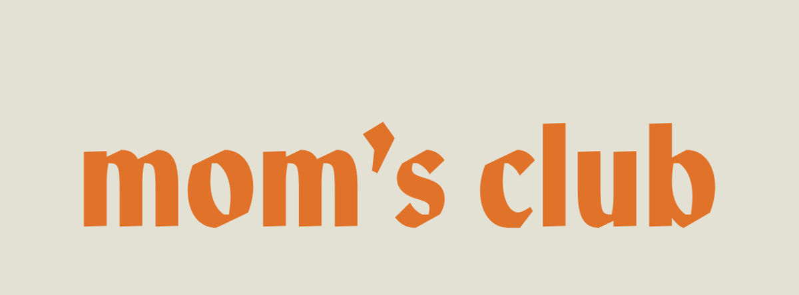
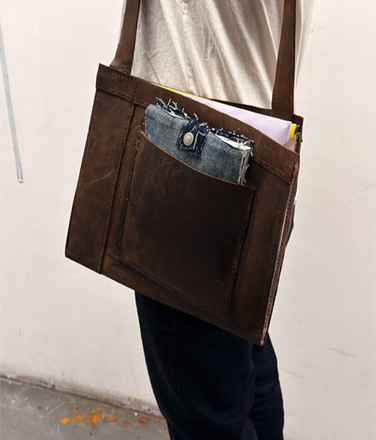
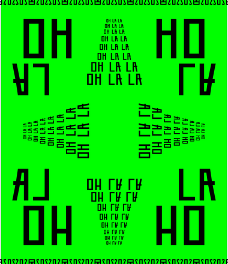
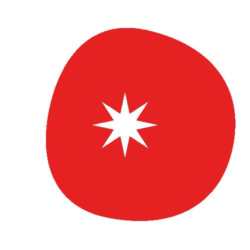

BY
about
contact
@beniyorohan.design
Dadi Khool Magazine
Editorial Design for Print and Web
Start Today
Type Installation & Editorial
Patico Bar
Brand Identity & Art Direction

Mom's Club
Brand Identity & Creative Consulting

Flavors of Solitude
Product Design, Album & Book Design
The Type Bird Series
Typographic Exploration & Vibe Coding
Ganchos Sans
Cultural Revival & Type Design

Patico Geometric
Type Design

Matos Organic Tomato Juice
Brand Identity & Art Direction
ITC Stamps Series
Iconography & Stamps